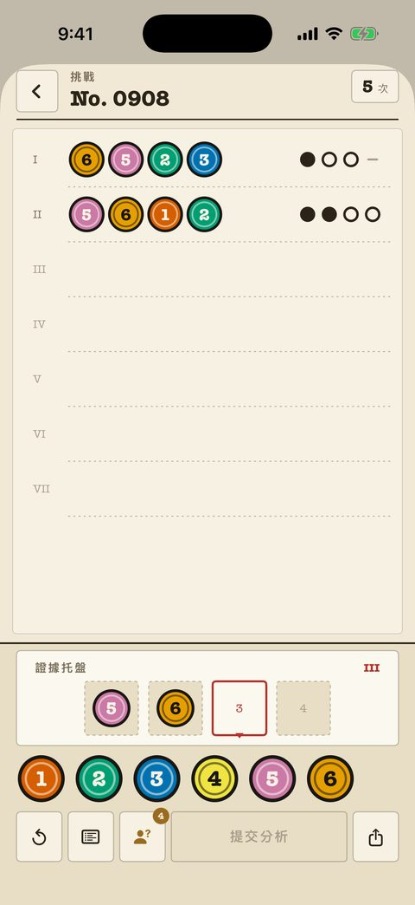
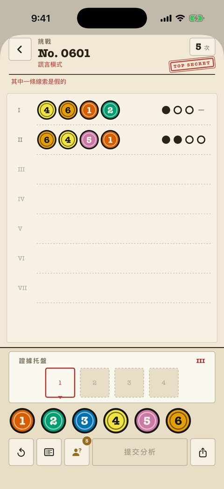
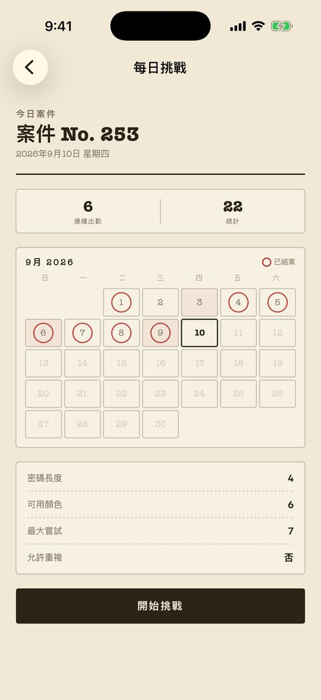

經典案件
240 案，從入門到大師，每案都是卷宗裡一頁編號的紙。嘗試次數在右上角；標記是純墨跡——點、圈、橫——完全不依賴顏色。
- 過去的每次分析都留在紙上，方便交叉比對。
- 棋盤上的筆記可以標記已排除和已確認的顏色。
- 「形狀標記」設定為每種顏色加一個專屬外形。
- 前 40 案免費。
一款珠璣妙算（Mastermind）類的顏色密碼推理遊戲，整個介面做成一份間諜卷宗。每次分析都會回傳一排墨跡標記——而在謊言卷宗裡，恰好有一份報告是假的。
免費開始 · $2.99 解鎖全部 · 無廣告 · 無需帳號
謊言卷宗 · 報告範例 4 格 · 6 色
第 I 行和第 II 行用的是同樣四個顏色。第 I 行說它們都不在密碼裡，第 II 行說四個都在。兩者不可能同時成立——其中一份報告是假的。
把顏色放進格子，送出分析。案件從 4 格 6 色起步，一直到 8 色的長密碼。
調色盤
格子
每送出一行，就回傳四個墨跡標記。標記不會告訴你對應的是哪一格。這個空白就是謎題本身。
顏色對，位置對 顏色對，位置錯 完全不在密碼裡
分析
報告
這四個顏色裡有兩個在密碼中——前提是這份報告是真的。在謊言案件裡，這一點還得你自己證明。
謊言案件每案必有一行是假的，所以嚴密的推理也可能撞牆。找出不可能同時成立的兩行，把假的那份丟掉，再用剩下的重建推理。
第 I 行
第 II 行
第 I 行說這些顏色都不在密碼裡，第 II 行說四個都在。其中一份報告是假的。

240 案，從入門到大師，每案都是卷宗裡一頁編號的紙。嘗試次數在右上角；標記是純墨跡——點、圈、橫——完全不依賴顏色。

另一份 240 案的卷宗。同樣的棋盤，每案偽造一份報告，還有一枚紅章提醒你別輕信紙上的字。

每天一題，人人相同。開始前就公布設定——密碼長度、顏色數、嘗試次數、是否允許重複。機密日會出謊言題。
| 模式 | 內容 | 取得方式 |
|---|---|---|
| 今日案件 | 每天一道共享題目，附連勝帳本和小工具。 | 免費 |
| 經典案件 | 240 案，從入門到大師，標記誠實。 | 40 案免費 |
| 謊言案件 | 240 案，每案有一份報告是假的。 | 80 案免費 |
| 雙人對戰 | 一台手機傳來傳去。一人設密碼，一人來破譯。 | 免費 |
| 挑戰好友 | 把結案的題目做成連結送出，對方拿到同一組密碼。 | 免費 |
| 自由模式 | 任意難度，無限生成棋盤。 | Pro |
| 自訂關卡 | 自己搭棋盤——長度、顏色、次數、重複。 | Pro |
Pro 一次買斷 $2.99，解鎖剩餘 360 案、自由模式和關卡編輯器。沒有訂閱，沒有廣告，不用註冊，進度只保存在本機。兩套主題——檔案紙與夜間桌面——應用程式會跟隨系統語言，也可以在設定裡切換。